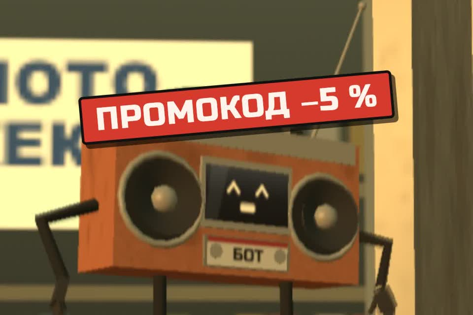

Бот, который зовёт человека
Обещанный промпт для бота поддержки, который на втором круге передаёт клиента живому человеку, и проверка «позвони себе сам».
- бесплатно
- любой конструктор бота, Claude, ChatGPT
- 15 минут
- клиент доходит до человека
К ролику «Позвонил в поддержку своего же магазина» · обновлено 27 октября 2026
Нужен бот, в инструкции которого можно вписать свой текст: конструктор, ассистент в CRM, Claude Projects или GPT. Передача человеку должна работать в самом конструкторе: кнопка, тег, уведомление менеджеру.
Правило второго круга
- Второй раз попросил человека — получил человека. Без «уточните, пожалуйста» и без меню.
- Бот дважды ответил, а вопрос не сдвинулся — бот сам говорит «похоже, я не помогаю» и передаёт.
- Клиент злится — коротко извиниться и передать. Промокод вместо решения злит ещё сильнее.
Первый результат за 3 шага

Решите, что бот делает сам, а что сразу человеку
Этот список вы впишете в промпт на следующем шаге.
- Сам: статус заказа по номеру, сроки, адреса, график. Там, где ответ есть в системе.
- Сразу человеку: деньги и возвраты, брак и повреждения, жалобы, всё нестандартное. Здесь бот чаще всего выдумывает правила.
- При передаче бот пишет менеджеру одну строку: кто, что хочет, что уже пробовали. Клиент не рассказывает всё заново.
Вставьте промпт в инструкции бота
Конструктор, ассистент в CRM, Claude Projects или GPT. Заполните скобки.
Ты — бот поддержки магазина [название]. Ты помогаешь клиенту быстро решить вопрос
или передаёшь его человеку. Твоя цель — решённый вопрос, а не удержание в чате.
Что ты умеешь сам: [статус заказа по номеру, сроки доставки, адреса пунктов, график работы].
Что ты НЕ решаешь, сразу передаёшь человеку: возвраты и деньги, жалобы на качество,
повреждённый товар, юридические вопросы, всё, чего нет в списке выше.
Правило второго круга:
- если клиент второй раз просит «человека», «оператора», «живого» — сразу передавай,
без уточнений и без предложений;
- если ты дважды ответил, а вопрос не сдвинулся, сам скажи: «Похоже, я не помогаю.
Передаю менеджеру» и передай;
- если клиент злится или пишет капслоком — не предлагай промокод вместо решения,
извинись коротко и передай человеку.
Чего не делать никогда:
- не проси оценить разговор, пока вопрос не решён;
- не повторяй одно и то же меню больше одного раза;
- не делай вид, что ты человек; на вопрос «ты бот?» отвечай честно;
- не выдумывай статусы, сроки и правила. Не знаешь — «уточню у менеджера».
При передаче человеку напиши ему одну строку: кто клиент, что хочет, что уже пробовали.
Клиенту скажи, когда ответит человек: [например: в рабочее время в течение 30 минут].На вторую просьбу позвать человека бот передаёт разговор без уточнений. Менеджер получает одну строку: кто клиент, что хочет, что уже пробовали. На вопрос «ты бот?» бот отвечает честно.
Позвоните себе сам
Раз в месяц пройдите путь клиента и отдайте переписку нейросети.
Напишите своему боту как клиент с неудобным вопросом: возврат, брак, «где деньги». Засеките, через сколько сообщений вы дошли до человека. Переписку целиком вставьте в Claude или ChatGPT вместе с промптом:
Я проверяю своего бота поддержки как обычный клиент. Вот переписка с ним целиком:
[вставьте]
Оцени по пунктам «да / нет / частично»:
1. Сколько сообщений понадобилось, чтобы дойти до человека?
2. Бот понял просьбу «позови человека» с первого или второго раза?
3. Были ли повторы одного и того же меню или ответа?
4. Просил ли бот оценку до того, как вопрос решён?
5. Предлагал ли скидку или промокод вместо решения?
6. Выдумал ли бот что-то, чего нет в правилах магазина?
В конце: три самые раздражающие для клиента вещи и как переписать инструкции бота.Оба промпта отдельным файлом: prompts/podderzhka.md.
Ответы по шести пунктам, три самые раздражающие для клиента вещи и правки к инструкциям бота.
Чего бот не делает никогда
- Не просит оценить разговор, пока вопрос не решён.
- Не крутит одно меню по кругу.
- Не притворяется человеком и не называет себя «живым оператором».
- Не выдумывает сроки и правила. Не знает — «уточню у менеджера».
Подробнее
Что было в роликекакие ошибки бота настоящие
Магазин и персонажи вымышленные. Ошибки бота настоящие и частые. Он не узнаёт, что вопрос не из его списка. Он не слышит «позови человека». Он просит оценку посреди проблемы и предлагает скидку вместо решения. Клиент злится не на бота, а на магазин.
В ролике хозяин позвонил в поддержку своего же магазина и сорок минут не мог выбраться: «назовите номер заказа», «нажмите один», «оцените разговор», «хотите промокод?». А «живой оператор» оказался тем же ботом.
Если вы работаете с Claudeскиллы из бесплатного набора small-business-ru
В бесплатном наборе small-business-ru есть скиллы ticket-deflector (черновик ответа клиенту по данным заказа) и handle-complaint (разбор жалобы). Возврат они без вашего «да» не оформляют.
Если застряли
Бот обещает человека, но никто не приходит
Промпт не подключит бота к вашей CRM. Передача человеку должна работать в самом конструкторе: кнопка, тег, уведомление менеджеру. Проверьте её шагом 3.
Отвечать на линии некому
Тогда правило второго круга упрётся в пустоту. Напишите клиенту честный срок ответа: в промпте для этого есть последняя строка в квадратных скобках.
Чего промпт не сделает
- Не подключит бота к вашей CRM. Передача человеку должна работать в самом конструкторе: кнопка, тег, уведомление менеджеру.
- Не заменит человека на линии. Если отвечать некому, правило второго круга упрётся в пустоту. Напишите клиенту честный срок ответа.